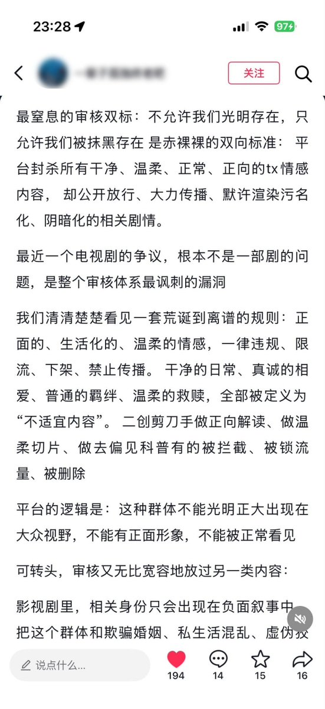
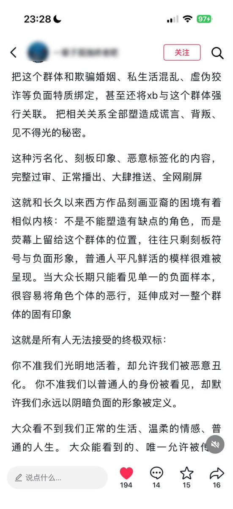
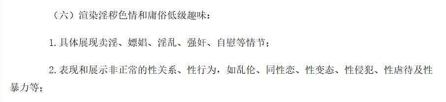

愿晚星照常升起🌈(keep4o)
@tadatsukiei
@whyyoutouzhele 这就是我们牢中的不支持不反对



李老师不是你老师
@whyyoutouzhele
“不允许我们光明存在，只允许我们被抹黑存在”
9月10日，一名用户发文质疑，中国影视及社交平台对同性内容存在审核双标：
普通、温柔、正面的同性情感会被限流、下架或判定违规，而将同性群体与骗婚、私生活混乱、性病等负面标签绑定的剧情，却能正常过审并传播。 https://t.co/T4BxkEHqJK
愿晚星照常升起🌈(keep4o)
@tadatsukiei
不赞成同性恋争取权益，不反对歧视迫害同性恋 https://t.co/79cNCIRD9Q